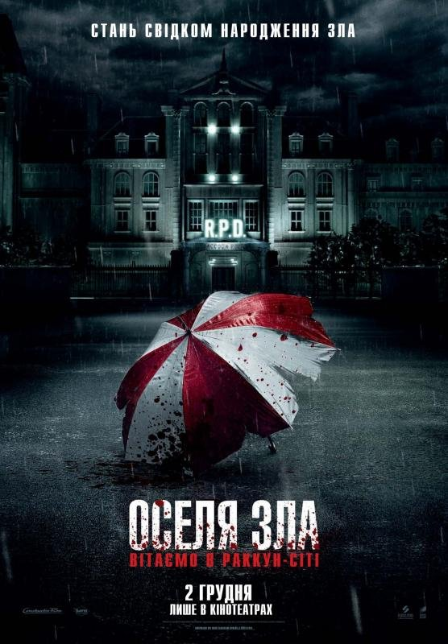
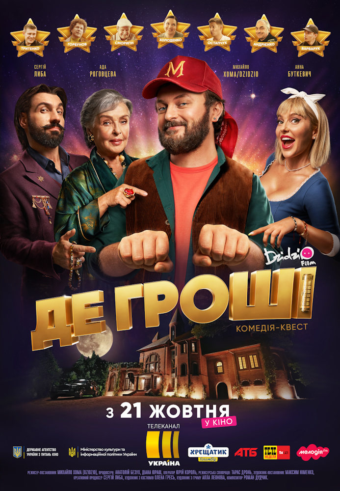

Популярні фільми
Людина-павук: Додому шляху нема

Вік:
12+Рік:
2021Оригінальна назва:
Spider-Man: No Way HomeРежисер:
Джон Воттс («Людина-Павук: Далеко від дому», «Людина-Павук: Повернення додому»).Період прокату:
15.12.2021 - 26.01.2022Рейтинг Imdb:
9.2Мова:
Українська моваЖанр:
Пригоди, Екшн, Фентезі, БойовикТривалість:
2:28Виробництво:
СШАСтудія:
SonyСценарій:
Стів ДіткоУ головних ролях:
Том Холланд («Людина-Павук: Далеко від дому», «Людина-Павук: Повернення додому», «Месники: Війна нескінченності», «Перший месник: Протистояння»), Бенедикт Камбербетч («Доктор Стрендж»)
Майбутній американський супергеройський фільм, заснований на коміксах видавництва Marvel Comics про однойменного персонажа. Фільм спродюсований Marvel Studios і Columbia Pictures, спільно з Sony Pictures Entertainment як дистриб'ютором. Є двадцять сьомою в рамках Кіновсесвіту Marvel, і четвертою стрічкою в Четвертій фазі. Є продовженням фільму «Людина-павук: Повернення додому» (2017) та «Людина-павук: Далеко від дому» (2019). Уперше за всю кіноісторію Людини-павука улюбленого супергероя викрито! Пітер Паркер більше не в змозі поєднувати звичайне життя та супергеройські обов’язки. Щоб повернути все назад, він звертається за допомогою до Доктора Стренджа… Проте ставки зростають і Пітер мусить відчути сповна, що означає бути супергероєм.
Оселя зла: Вітаємо в Раккун-Сіті
Вік:
16+Рік:
2021Оригінальна назва:
Resident Evil: Welcome to Raccoon CityРежисер:
Йоханнес Робертс («Синя безодня»).Період прокату:
02.12.2021 - 29.12.2021Рейтинг Imdb:
5.6Мова:
Українська моваЖанр:
Пригоди, Екшн, Жахи, ФантастикаТривалість:
1:57Виробництво:
США, Канада, НімеччинаСтудія:
SonyСценарій:
Йоханнес РобертсУ головних ролях:
Кая Скоделаріо («Пірати Карибського моря: Помста Салазара», «Хижаки», трилогія «Той, що біжить лабіринтом»), Еван Джогія («Зомбіленд: Подвійний постріл»), Ханна Джон-Кеймен («Людина-мураха та Оса»), Ніл Макдонаф («Їжак Сонік»).
Події розгортаються у невеличкому містечку Раккун-Сіті. Фармацевтичний гігант Umbrella Corporation проводив випробування нових препаратів. Результатом дослідів мало стати створення супер-солдатів. Натомість місто було перетворене на пустку. Невідоме зло ховається під землею і планує вирватися назовні. Фантастичний бойовик, детектив і фільм жахів «Оселя зла: Вітаємо у Раккун-Сіті» знято за сюжетом відеогри Resident Evil. Перша гра серії вийшла у 1996. Новий проект не є продовженням серії фільмів, знятих Полом Андерсеном із Мілою Йовович у головній ролі. Бойовик стане перезапуском франшизи. Режисером на проекті міг стати Джеймс Ван, проте його замінили на Йоханнса Робертса, який сам написав сценарій. За задумом Робертса, фільм має бути більш похмурим, страшним та наближеним за атмосферою до оригінальної гри. Перелік героїв, що з’являться на екрані повністю відповідає героям гри. Аби підготувати акторів до ролі, він просив їх грати у першу гру серії.
Де гроші
Вік:
0+Рік:
2021Режисер:
Михайло Хома (DZIDZIO)Період прокату:
21.10.2021 - 10.11.2021Рейтинг Imdb:
7Мова:
Українська моваЖанр:
Комедія, ПригодиТривалість:
1:48Виробництво:
УкраїнаСтудія:
DZIDZIOFILM (за підтримки Державного агентства України з питань кіно та Міністерства культури та інформаційної політики України)Сценарій:
Сергій Алімов, Тарас Дронь, Сергій Либа, Павло Остріков, Кирило Тимченко, Михайло Хома та Діана ЮрашУ головних ролях:
Ада Роговцева, Михайло Хома, Сергій Либа, Анна Буткевич, Ахтем Сеітаблаєв, Віктор Андрієнко, Володимир Остапчук, Олексій Тритенко, Юрій Горбунов, Володимир Задніпровський, Євген Сморигін, Сталіна Лагошняк, Любов Тимошевська, Наталя Холоденко, Діма Варварук, Сергій Бачик, Василь Ващук, Назарій Гук та інші.
Авантюрний піаніст Михайло береться за звільнення свого друга з-під арешту. Щоб все влаштувати йому потрібні гроші і він влаштовується на роботу до літньої господарки загадкового квест-будинку. Михайло ще не знає, що питання "де гроші" хвилює не лише його, але й усіх, хто шукає в цьому будинку гроші.
Зроблено Big Brother. Пошта:maxxim0410@gmail.com